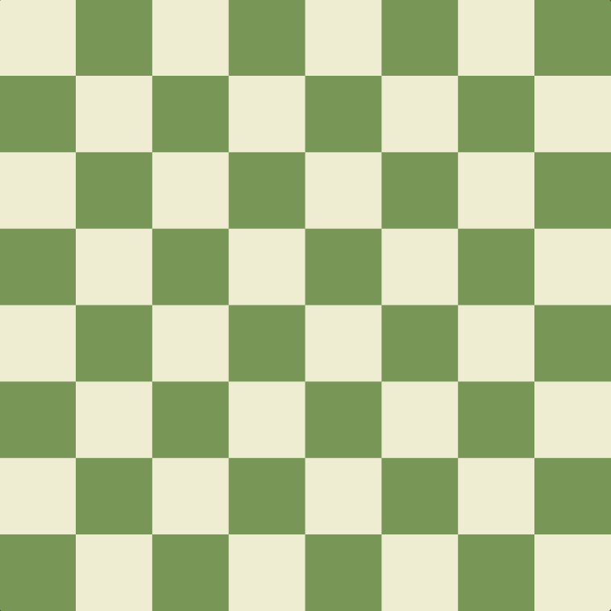
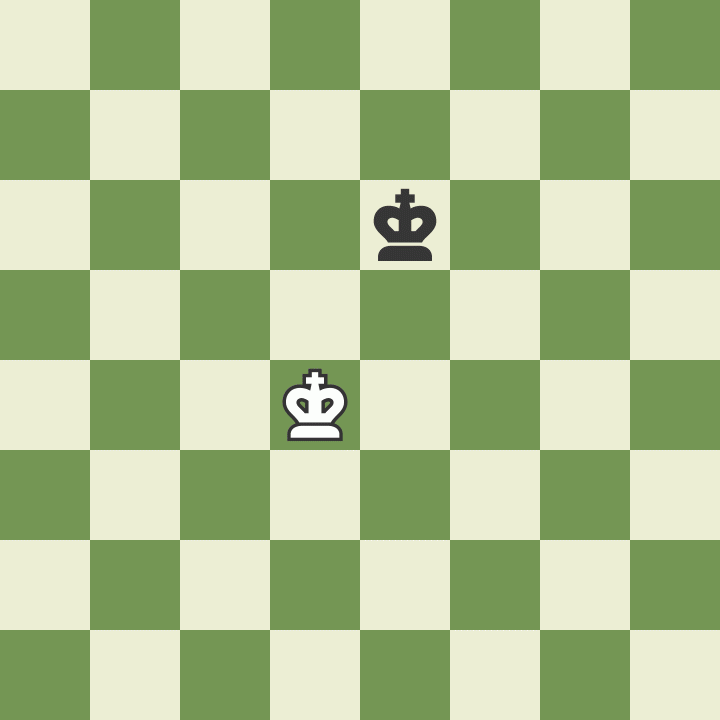
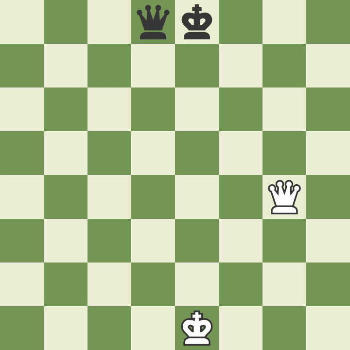
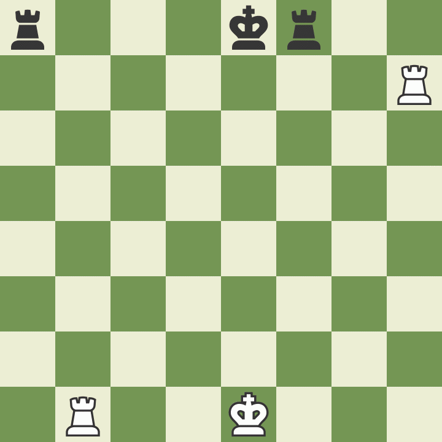
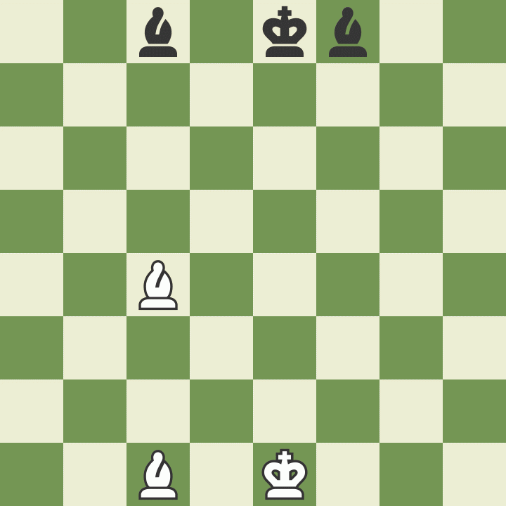
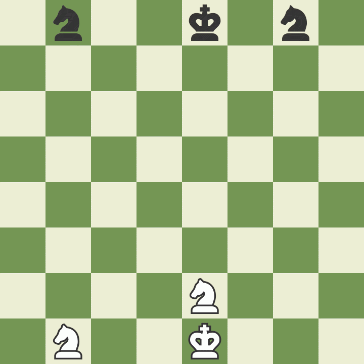
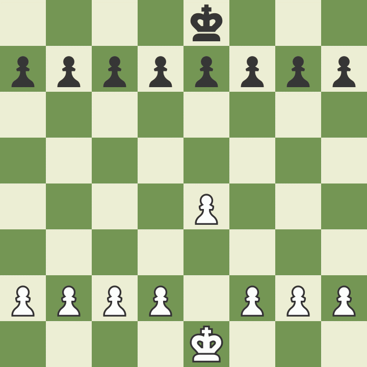
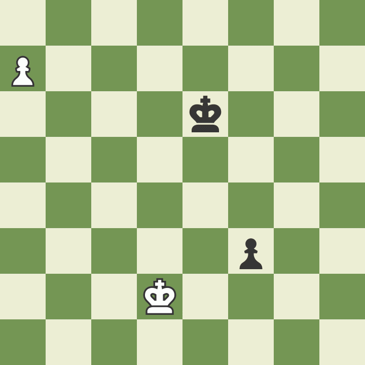
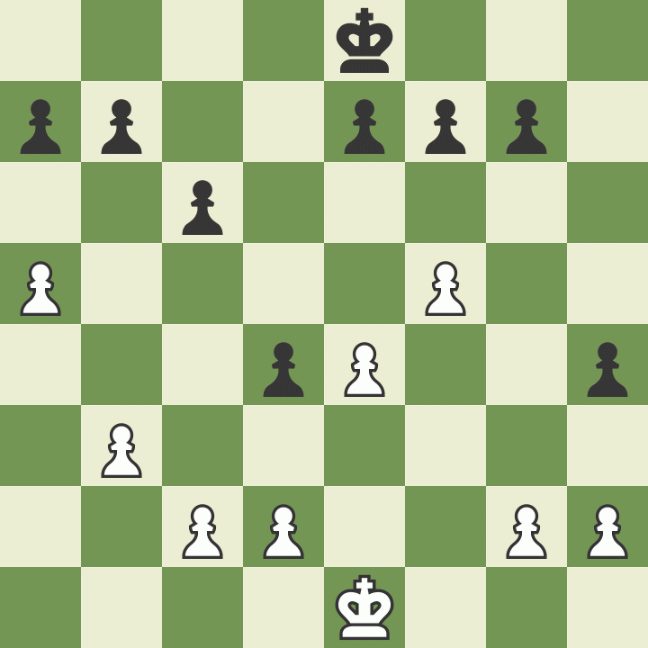
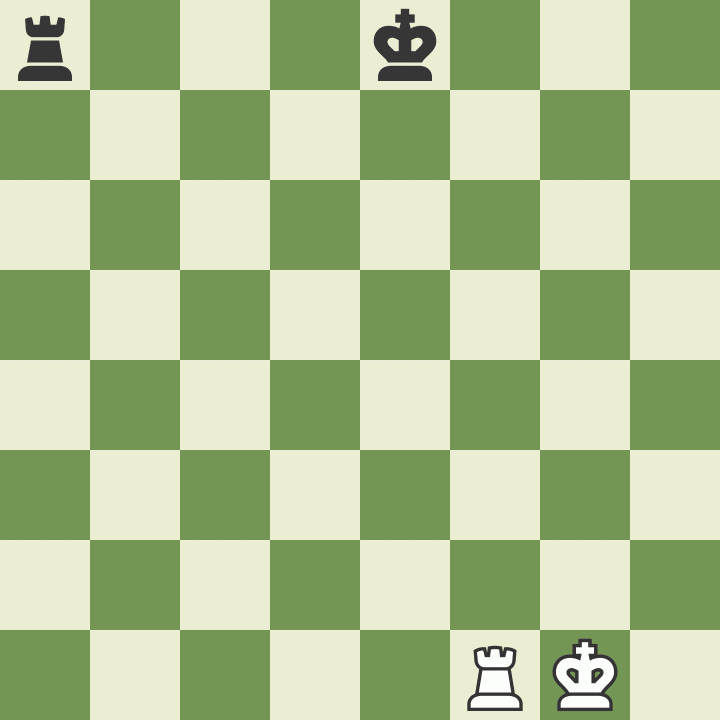

Home
Storia
Regole
All'inizio della partita, la scacchiera viene disposta in modo che ogni giocatore abbia una casa bianca (o di colore chiaro) nell'angolo inferiore destro.
I pezzi sono disposti sempre nello stesso ordine. La seconda riga orizzontale (o traversa) viene occupata dai pedoni. Sulla prima riga, invece, partendo dai due angoli opposti, vengono prima collocate le Torri, seguite dai Cavalli, dagli Alfieri e, infine, dalla Donna, la quale occupa sempre una casa del proprio colore (Donna bianca su casa bianca, Donna nera su casa nera). Il Re viene posizionato nell'ultima casa rimasta libera.
Come si muove il Re
Come si muove la Donna
Come si muove la Torre
Come si muove l'Alfiere
Come si muove il Cavallo
Come si muove il Pedone
Come si promuove un Pedone negli scacchi
Come si cattura "en passant" negli scacchi
Come si arrocca
Il giocatore con i pezzi bianchi muove sempre per primo. Per questo motivo in genere i giocatori tirano a sorte per decidere chi ha il Bianco, lanciando una moneta oppure nascondendo in ciascuna mano un pedone nero ed uno bianco e facendo scegliere all'avversario. A questo punto, il Bianco farà la sua mossa, a cui seguirà quella del Nero; muoverà poi di nuovo il Bianco e poi ancora il Nero... e così via fino alla fine della partita. Avere la possibilità di muovere per primi rappresenta un piccolo vantaggio, poiché offre al giocatore col Bianco un'occasione di cominciare subito ad attaccare.